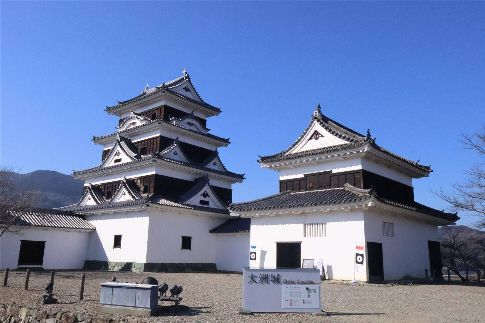

大洲の視点 ・ 出典: 一般社団法人キタ・マネジメント「令和７年度実績報告」（情報源日付: 2026/06頃） ・ 約3分で読める

要点
大洲市の観光地域づくり法人「キタ・マネジメント」が公開している令和７年度実績報告を読んだ。
数字を３年分並べて比較できる資料になっていて、伸びているところ・伸び悩んでいるところがはっきり見える内容だった。
まず宿泊者数の推移。
全体の宿泊者数はほぼ横ばいだが、インバウンドだけを見ると２年で約4.8倍。
訪日外国人の来訪が観光全体を下支えしている構図がはっきり出ている。
観光消費額も24.0億円→33.3億円→33.8億円と令和６年度に大きく伸び、その水準を維持している。
ここでいう観光消費額は、市全体の数字だ。市の戦略会議資料には「歴史的建造物の活用」という区分の観光消費額として３億4,600万円（令和５年度）という別の数字も載っているが、あちらは古民家再生事業に紐づく分だけを数えたもので、範囲がちがう。
実は市はこの年、宿泊者数14万人という目標を掲げていた。実績の118,013人は、その84％にとどまり、目標には届かなかった。
報告書によると、市内宿泊施設への聞き取りで「労働者確保が困難で、すべての部屋を運営できていない」ことが伸び悩みの主因として挙がったという。
一方でインバウンドは目標2,000人に対し実績5,263人、達成率にすると263％と大幅に上回っている。
人手不足で客室の稼働そのものが頭打ちになる中、インバウンド需要だけが目標を置き去りにするほど伸びている、というのが実態のようだ。
情報発信の面でも急激な伸びがあった。
特にメディア露出換算額は令和７年度だけで前年の約2.7倍に伸びていて、Japan Travel・ Japan Guideといった訪日外国人向けサイトへの記事掲載など、海外メディア戦略が本格化してきたことが うかがえる。
一方で、少し気になる数字もあった。住民満足度は88.2％（令和５年度）→93.0％（令和６年度）→88.4％（令和７年度）と、令和６年度をピークに約５ポイント下がっている。
観光客・情報発信の数字がいずれも伸びている中で、住民側の満足度だけがやや後退しているのは、観光地化のスピードに対して地元側の受け止め方が追いついていない部分があるのかもしれない。
資料の中では、二次交通（タクシー等）の調査で「大洲市内に交通空白時間帯が存在する」ことが確認されたとの記述もあった。
観光客が増える一方で、地域の移動手段の課題も同時に見えてきているということなんだと思う。
観光の数字は順調に伸びているように見えるが、「住民満足度」という指標が入っていることで、 伸びの裏側にある課題まで一緒に公表しているのは、この手の実績報告としては誠実な姿勢だと感じた。
この記事をサイトに掲載した日: 2026/08/08